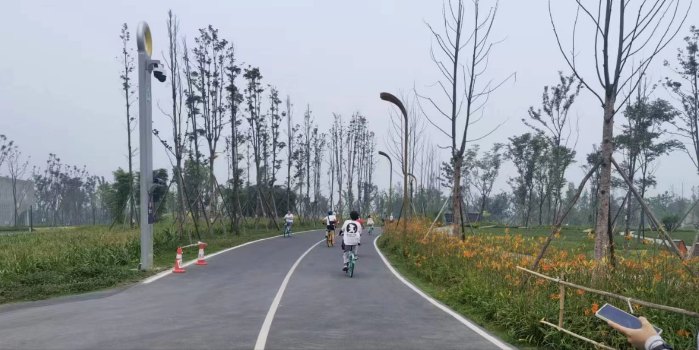
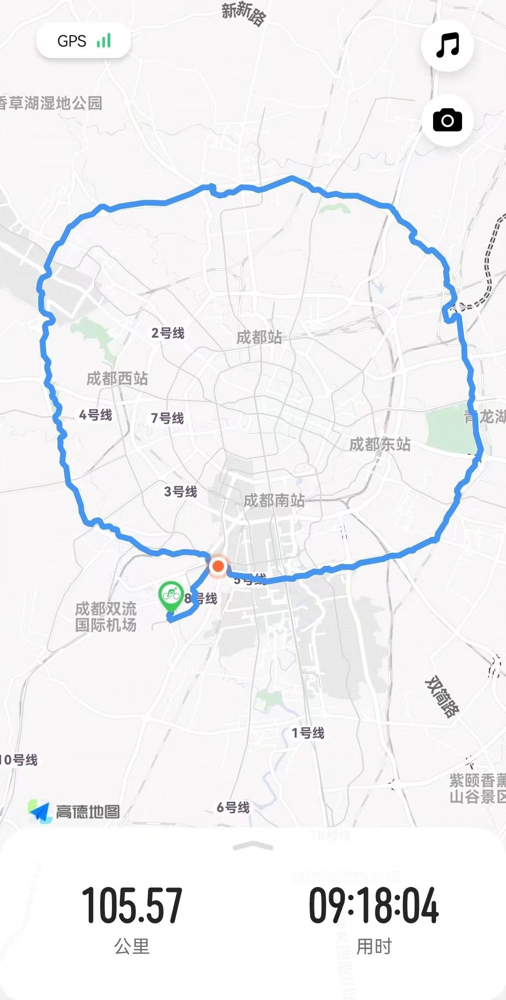

A 100km Ride
The Tianfu Greenway has become a new “must-visit place” for cycling enthusiasts. This is a recollection of my cycling experience on the greenway.
The first-level greenway of Chengdu Ecological Park, encircling the city, is commonly known as the “Chengdu Tianfu Greenway”. It is a 100km long greenway built along the Ring Expressway. Along this greenway, there are 78 bridges that showcase the unique cultural characteristics and you can experience the city’s youthfulness as well as vitality.
I am just an amateur cyclist, and the longest distance I have ridden at one time is only a dozen kilometers. It has been many years since my last long-distance city cycling adventure.
However, at the invitation of my friends, together with three cyclists, we have decided to challenge ourselves to complete the entire 100km route at the first arrival. Of course, the actual distance is a bit longer because Sichuan University is located some distance away from the entrance of the greenway we selected.
Considering that none of us usually ride mountain bikes and also taking into account rental costs, we have chosen a type of bike that I think is not suitable for long distances: shared bikes. Since the first two hours of riding are free, we take breaks every two hours and renew a ride to continue our journey🌚.
Our journey wasn’t all plain sailing. One of our friends fell down and have a bruise shortly after we started riding, but luckily there was a security station nearby with someone on duty. They kindly provided us with some iodine and other medicine.
The weather that day was very hot, but I still wore long pants and sunscreen clothing to protect myself from the sun. However, when I returned in the evening, I noticed that my skin was visibly tanned.
Although I was not very well-prepared myself, fortunately, I didn’t encounter any major problems along the journey. My bike didn’t have any malfunctions, and despite the heat, I didn’t suffer from heatstroke. I didn’t wear cycling shorts and didn’t get any abrasions, and even though I forgot to bring a helmet (don’t follow my example), I’m lucky to get no injuries from falling off the bike or something.
In the height of summer, many stretches of road were lined with blooming flowers. Butterflies danced among them, and the sunlight poured down freely. I crossed over unique bridges, passed through fields, traversed city streets, went through parks, and even crossed lakes.

Finally, when I saw that my route on the map formed a complete circle, my heart was filled with joy and satisfaction. When all the four friends succeeded in reuniting at the starting, also ending point, the feeling of fulfillment reached its peak.
